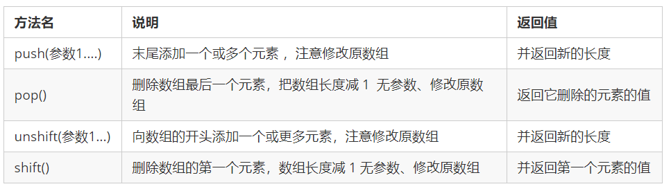

9. JS规范
1.目标：
能够知道 JS 中命名规范规则
能够书写规范的 JS 代码
1.标识符命名规范
变量、函数的命名必须要有意义
变量的名称一般用名词
函数的名称一般用动词
2.操作符规范
1 | // 操作符的左右两侧各保留一个空格 |
3.单行注释规范
1 | for (var i = 1; i <= 5; i++) { |
4. 其他规范

10. 数组
1.目标
能够知道为什么要有数组
能够创建数组
能够获取数组中的元素
能够对数组进行遍历
能够给数组新增一个元素
能够独立完成冒泡排序的案例
10.1 概念
问：之前学习的数据类型，只能存储一个值。如果我们想存储班级中所有学生的姓名，那么该如何存储呢？
答：可以使用数组(Array)。数组可以把一组相关的数据一起存放，并提供方便的访问(获取）方式。
问：什么是数组呢？
答：数组是指一组数据的集合，其中的每个数据被称作元素，在数组中可以存放任意类型的元素。数组是一种将一组数据存储在单个变量名下的优雅方式。
1 | // 普通变量一次只能存储一个值 |
10.2 创建数组
1.创建方式
JS 中创建数组有两种方式：
- 利用 new 创建数组
- 利用数组字面量创建数组
2. new
1 | var 数组名 = new Array() ； |
这种方式暂且了解，等学完对象再看
注意 Array () ，A 要大写
3. 数组字面量
1.利用数组字面量创建数组
1 | //1. 使用数组字面量方式创建空的数组 |
数组的字面量是方括号 [ ]
声明数组并赋值称为数组的初始化
这种字面量方式也是我们以后最多使用的方式
4.数组元素的类型
数组中可以存放==任意类型==的数据，例如字符串，数字，布尔值等。
var arrStus = ['小白',12,true,28.9];
5. 复习提问
- 数组的作用是什么？
- 创建数组我们有哪两种方式？ 哪一种我们最常用？
- 什么是数组元素？ 数组里面类型有限制吗？
10.3 获取数组元素
1. 数组的索引
索引 (下标) ：用来访问数组元素的序号（数组下标从 0 开始）。

数组可以通过索引来访问、设置、修改对应的数组元素，我们可以通过“==数组名[索引]==”的形式来获取数组中的元素。
这里的访问就是获取得到的意思
1 | // 定义数组 |
- 练习
定义一个数组，里面存放星期一、星期二…… 直到星期日（共7天），在控制台输出：星期日。
1 | var day1 = ['星期一','星期二','星期三','星期四','星期五','星期六','星期日']; |
10.4 遍历数组
1. 遍历
1.问：数组中的每一项我们怎么取出来？
- 答：可以通过“数组名[索引号]”的方式一项项的取出来。
1 | var arr = ['red','green', 'blue']; |
2.问：怎么把数组里面的元素全部取出来？
规律：
从代码中我们可以发现，从数组中取出每一个元素时，代码是重复的，有所不一样的是索引值在递增
答案就是 循环
3.遍历: 就是把数组中的每个元素从头到尾都访问一次（类似我们每天早上学生的点名）。
我们可以通过 for 循环索引遍历数组中的每一项
1 | var arr = ['red','green', 'blue']; |
2. 数组的长度
1.使用“数组名.length”可以访问数组元素的数量（数组长度）。
1 | var arrStus = [1,2,3]; |
注意：
此处数组的长度是数组元素的个数 ，不要和数组的索引号混淆。
当我们数组里面的元素个数发生了变化，这个 length 属性跟着一起变化。
3. 练习
1.遍历数组: 请将 [“关羽”,”张飞”,”马超”,”赵云”,”黄忠”,”刘备”,”姜维”]; 数组里的元素依次打印到控制台。
1 | var arr = ["关羽","张飞","马超","赵云","黄忠","刘备","姜维"]; |
i < arr.length;不能用<=，会多一个，那一个没有数据就是undefind;- 长度从1开始算，索引从0开始算；
4. 复习提问
什么是遍历 ？
我们通过什么来遍历数组里面的元素 ？
for 里面的 i 是什么？当什么使用？ for里面的数组元素怎么写？
怎么获取数组的长度？
数组索引号和数组长度有什么关系？
5. 案例
1.数组求和及平均值
- 求数组 [2,6,1,7, 4] 里面所有元素的和以及平均值。
2.分析：
声明一个求和变量 sum。
遍历这个数组，把里面每个数组元素加到 sum 里面。
用求和变量 sum 除以数组的长度就可以得到数组的平均值。
3.代码：
1 | var arr = [2, 6, 1, 7, 4]; |
2. 数组最大值
1.求数组[2,6,1,77,52,25,7]中的最大值。
2.分析：
声明一个保存最大元素的变量 max。
默认最大值可以取数组中的第一个元素。
遍历这个数组，把里面每个数组元素和 max 相比较。
如果这个数组元素大于max 就把这个数组元素存到 max 里面，否则继续下一轮比较。
最后输出这个 max。
3.代码：
1 | var arrNum = [2,6,1,77,52,25,7]; |
3.1 重温看分析写下的代码，成功；2021-3-30 14:05:48
1 | <script> |
3. 数组转换为字符串
1.要求：将数组 [‘red’, ‘green’, ‘blue’, ‘pink’] 里面的元素转换为字符串
输出： ‘redgreenbluepink’
2.分析：
思路：就是把里面的元素相加就好了，但是注意保证是字符相加。
需要一个新变量 str 用于存放转换完的字符串。
遍历原来的数组，分别把里面数据取出来，加到字符串变量 str 里面。
3.代码：
1 | var arr = ['red', 'green', 'blue', 'pink']; |
4. 数组转换为分割字符串
要求：将数组 [‘red’, ‘green’, ‘blue’, ‘pink’] 转换为字符串，并且用 | 或其他符号分割
输出： ‘red|green|blue|pink’
- 也可以加空格；
1.分析：
需要一个新变量用于存放转换完的字符串 str。
遍历原来的数组，分别把里面数据取出来，加到字符串里面。
同时在后面多加一个分隔符。
2.代码：
1 | var arr = ['red', 'green', 'blue', 'pink']; |
10.5 添加元素
1. 长度添加
1.通过修改 length 长度新增数组元素
可以通过修改 length 长度来实现数组扩容的目的
length 属性是可读写的
1 | var arr = ['red', 'green', 'blue', 'pink']; |
其中索引号是 4，5，6 的空间没有给值，就是声明变量未给值，默认值就是 undefined。

2. 数组索引
1.通过修改数组索引新增数组元素
- 可以通过修改数组索引的方式追加数组元素
- 不能直接给数组名赋值，否则会覆盖掉以前的数据
1 | var arr = ['red', 'green', 'blue', 'pink']; |
这种方式也是我们最常用的一种方式。
3. 案例：数组新增元素
1.新建一个数组，里面存放10个整数（ 1~10）， 要求使用循环追加的方式输出： [1,2,3,4,5,6,7,8,9,10]
2.分析：
使用循环来追加数组。
声明一个空数组 arr。
循环中的计数器 i 可以作为数组元素存入。
由于数组的索引号是从0开始的， 因此计数器从 0 开始更合适，存入的数组元素要+1。
1 | var arr = []; |
4. 案例：筛选数组
1.要求：将数组 [2, 0, 6, 1, 77, 0, 52, 0, 25, 7] 中大于等于 10 的元素选出来，放入新数组。
2.分析：
声明一个新的数组用于存放新数据。
遍历原来的数组，找出大于等于 10 的元素。
依次追加给新数组 newArr。
3.代码1：
1 | var arr = [2, 0, 6, 1, 77, 0, 52, 0, 25, 7]; |
4.方法2：不错
1 | var arr = [2, 0, 6, 1, 77, 0, 52, 0, 25, 7]; |
10.6 数组案例
1. 删除指定数组元素
1.要求：将数组[2, 0, 6, 1, 77, 0, 52, 0, 25, 7]中的 0 去掉后，形成一个不包含 0 的新数组。
2.分析：
需要一个新数组用于存放筛选之后的数据。
遍历原来的数组，把不是 0 的数据添加到新数组里面( 此时要注意采用数组名+索引的格式接收数据)。
新数组里面的个数，用 length 不断累加。
- 就是把上面的案例里面的if条件改了；（捂脸）2021-3-30 16:52:15
3.代码：
1 | var arr = [2, 0, 6, 1, 77, 0, 52, 0, 25, 7]; |
2. 翻转数组
要求: 将数组 [‘red’, ‘green’, ‘blue’, ‘pink’, ‘purple’] 的内容反过来存放。
输出： [‘purple’, ‘pink’, ‘blue’, ‘green’, ‘red’]
2.分析：

3.代码：
1 | var arr = ['red', 'green', 'blue', 'pink', 'purple']; |
arr.length - i - 1解析：- 1.当第一次循环，i=0时，
newArr[0]=arr[5-0-1]=newArr[0]=arr[4] - 2.当第二次循环时，i=1，
newArr[1]=arr[5-1-1]=newArr[1]=arr[3] - 3.当第三次循环，i=2，
newArr[2]=arr[5-2-1]=arr[2] - 4.当第四次循环,i=3，
newArr[3]=arr[5-3-1]=arr[1] - 依次类推，这样就实现了翻转数组；2020-9-30 20:24:10；
- 1.当第一次循环，i=0时，
3.1 重温：2021-3-30 16:57:20
1 | var arr1 = ['red', 'green', 'blue', 'pink', 'purple']; |
3. 数组排序（冒泡排序）
1.我们先复习下如何把2个变量交换数据
1 | // 利用第三个变量 |
2.冒泡排序：是一种算法，把一系列的数据按照一定的顺序进行排列显示(从小到大或从大到小）。
例如，我们可以将数组 [5, 4, 3, 2, 1]中的元素按照从小到大的顺序排序，输出： 1，2，3，4，5

3.代码：
1 | var arr = [5, 4, 3, 2, 1]; |
1.外层循环只需要length-1次；
- 例如数组：
arr = [5, 4, 3, 2, 1];,length=5，length-1=4； - 5个元素，只需要排四次，最后一个，元素就是最小的。
- 例如数组：
2.那么内循环，循环几次比较好呢？我们先不设置循环多少次（先不考虑条件表达式）
- 从j=0开始：如果arr[0]>arr[1]，则把arr[1]的元素给arr[0];
- j=1时，arr[1]再与arr[2]做比较。
- j=2时，[2]与[3]
- j=3时，[3]与[4]
- j=4时，[4]与[5]，但索引是比长度少一个的，索引4就是长度5，这里没有索引5的数据，所以不需要j=4；
- 循环几次？0123，4次；循环4次；
- 可以先假设，条件表达式应该这么写：
j<arr.length-1
2.1 第二次，i=1了，j还是从0开始，循环的次数是：
j < arr.length - 1=5-1=4，0，1，2，3。循环4次；1.那么就是:arr[0]与arr[1]，arr[1]与arr[2]，arr[2]与arr[3]比较，arr[3]与arr[4]。
那么问题来了，arr[4]上一轮，i=0的时候，已经比较过了，是最大了的。不需要比较这一次了；
1.例如：[1,3,2,5,4]
2.首先，if(arr[0]>arr[1])，不大于，跳过。
3.然后arr[1]是否大于arr[2]，3>2，成立，交换，arr[1]=2，arr[2]=3；
4.接着arr[2]与arr[3]，也就是3与5，3>5为假，跳过；
5.arr[3]与arr[4]，5>4成立，arr[3]=4，arr[4]=5。
6.第一轮，就会选出最大的放在最高的索引值的地方；
2.那怎么办？修改条件表达式，如何修改呢？这次-2，下次-3吗？明显不能这样，代码需要动态的变化
- 这里，我们可以预想i=2的时候，也就是外循环第三次的时候，我们内循环又该循环几次呢？没错，那个时候应该比这次还要少一次，2次；
- i=1时，j循环的次数，比i=0少一次；i=2时，j循环的次数，比i=1的时候也少一次；
- 外循环i每增加一个，内循环就要减少一个。正好可以-i；
所以：条件表达式从
j<arr.length-1修改为j<arr.length-i-1;
所以，在里面的循环里的条件表达式，可以为：
j < arr.length - i - 13.这样写出来后，思路终于清晰了。2020-9-30 22:19:06
4.重温：
- 最关键一点，for循环里面的，i++，是一次循环最后才执行的。这个调试断点能看到；
- 2021-3-30 17:05:25
11. 函数
1.目标：
能够说出为什么需要函数
能够根据语法书写函数
能够根据需求封装函数
能够说出形参和实参的传递过程
能够使用函数的返回值
能够使用arguments获取函数的参数
11.1 概念
在 JS 里面，可能会定义非常多的相同代码或者功能相似的代码，这些代码可能需要大量重复使用。
虽然 for循环语句也能实现一些简单的重复操作，但是比较具有局限性，此时我们就可以使用 JS 中的函数。
- 毕竟怎么循环需要写好条件，不能哪里用的时候，直接调用；
函数：就是封装了一段可被重复调用执行的代码块。通过此代码块可以实现大量代码的重复使用。
2.榨汁机解释：

11.2 使用
函数在使用时分为两步：声明函数和调用函数。
1. 声明函数
1 | // 声明函数 |
- function 是声明函数的关键字,必须小写
- 由于函数一般是为了实现某个功能才定义的， 所以通常我们将函数名命名为动词，比如 getSum
2. 调用函数
1 | // 调用函数 |
调用的时候千万不要忘记添加小括号
口诀：函数不调用，自己不执行。
==注意==：声明函数本身并不会执行代码，只有调用函数时才会执行函数体代码。
3. 封装
函数的封装是把一个或者多个功能通过函数的方式封装起来，对外只提供一个简单的函数接口
简单理解：封装类似于将电脑配件整合组装到机箱中 ( 类似快递打包）
4. 案例
1.利用函数计算1-100之间的累加和
1 | /* |
5. 复习提问
- 函数是做什么的（作用）？
- 声明函数用什么关键词？
- 如何调用函数？
- 封装是什么意思？
11.3 参数
1. 形参与实参
在声明函数时，可以在函数名称后面的小括号中添加一些参数，这些参数被称为形参，而在调用该函数时，同样也需要传递相应的参数，这些参数被称为实参。
| 参数 | 说明 |
|---|---|
| 形参 | 形式上的参数，函数定义的时候，传递的参数，当前并不知道是什么 |
| 实参 | 实际上的参数，函数调用的时候传递的参数，实参是传递给形参的 |
参数的作用 : 在函数内部某些值不能固定，我们可以通过参数在调用函数时传递不同的值进去。
1 | // 带参数的函数声明 |
2.案例：利用函数求任意两个数的和
1 | function getSum(num1, num2) { |
2. 参数的传递
1 | // 声明函数 |
调用的时候实参值是传递给形参的
形参简单理解为：==不用声明的变量==
实参和形参的多个参数之间用逗号（,）分隔
3. 形参和实参个数不匹配问题
| 参数个数 | 说明 |
|---|---|
| 实参个数 等于 形参个数 | 输出正确结果 |
| 实参个数 多余 形参个数 | 只取到形参的个数 |
| 实参个数 小于 形参个数 | 多的形参定义为undefined，结果为NaN |
1 |
|
注意：在JavaScript中，形参的默认值是undefined。
4. 小结
函数可以带参数也可以不带参数
声明函数的时候，函数名括号里面的是形参，形参的默认值为 undefined
调用函数的时候，函数名括号里面的是实参
多个参数中间用逗号分隔
形参的个数可以和实参个数不匹配，但是结果不可预计，我们尽量要匹配
11.4 函数的返回值
1. return语句
有的时候，我们会希望函数将值返回给调用者，此时通过使用 return 语句就可以实现。
return 语句的语法格式如下：
1 | // 声明函数 |
在使用 return 语句时，函数会停止执行，并返回指定的值
如果函数没有 return ，返回的值是 undefined
2.例如：
声明了一个sum()函数，该函数的返回值为666，其代码如下：
1 | // 声明函数 |
2.2 实验结果：

看来具体是sum()的值变成了666，而不是sum的值；
既然有return的需要，那么大概是这样：
没有写return的时候，里面代码得出的结果不保存到sum();
重温：2021-4-1 17:43:09
不会保存到那个函数本身上；2021-4-1 17:43:26
3. 案例 1 - 任意两个数的最大值
利用函数求任意两个数的最大值
1 | function getMax(num1, num2) { |
1.emm，难道说？如果我这么写
1 | function getMax(num1, num2) { |
1.1 console打印的：undefined;
- 如果没有返回值，函数里面的代码计算出的值，就用不了吗？
1.2 继续试验，返回a
1 | function getMax(num1, num2) { |
1.2.1 好了，又打印的出值了；

4. 案例2 数组max
1.利用函数求任意一个数组中的最大值
求数组 [5,2,99,101,67,77] 中的最大数值。
2.代码：
1 | //定义一个获取数组中最大数的函数 |
2.2 以前的写法：
1 | var arrNum = [2,6,1,77,52,25,7]; |
2.3 怎么感觉函数还要复杂一下？
- 1.如果调用的少，1次，2次，是这样；
- 2.如果调用的多，如果是用循环的写法，还要修改循环里面的arrNum.length，等相关变量名。
- 3.如果要多个使用，那么需要写多个循环
2.4 而函数，一个函数完成后，一般是不会修改到函数里面的内容，除非要改变逻辑，算法等。
- 2.函数内部不需要修改，只需要改变外面调用的实参
- 3.不需要写多个函数，只需要多次调用。不同的调用，就是不同的实参；
5. 重温；
1.~2021-4-1 17:49:01
1 | function getSum(num1, num2) { |
2.如果没有return，就会undefined;
2. return 终止函数
return 语句之后的代码不被执行。
1 | function add(num1，num2){ |
3. return 的返回值
1.return 只能返回一个值。如果用逗号隔开多个值，以最后一个为准。
1 | function add(num1，num2){ |
2.案例：创建一个函数，实现两个数之间的加减乘除运算，并将结果返回
1 | var a = parseFloat(prompt('请输入第一个数')); |
- count
- 这个案例是告诉我，想返回多个数，就用数组框在一起么，然后用一个变量调用；
4. undefined
1.函数没有 return 返回 undefined
函数都是有返回值的
如果有return 则返回 return 后面的值
如果没有return 则返回 undefined
5. bcr的区别
1.break ,continue ,return 的区别
- break ：结束当前的循环体（如 for、while）
- continue ：跳出本次循环，继续执行下次循环（如 for、while）
- return ：不仅可以退出循环，还能够返回 return 语句中的值，同时还可以结束当前的函数体内的代码
6. 作业
1.写一个函数，用户输入任意两个数字的任意算术运算（简单的计算器小功能），并能弹出运算后的结果。
1.1 代码：
1 |
|
1.2 自己写：
1 | function get(num1, sign_of_operation, num2) { |
- [sign_of_operation[^3]](https://fanyi.baidu.com/#en/zh/sign of operation)
2.写一个函数，用户输入任意两个数字的最大值，并能出弹运算后的结果。
- 在上面11.4.1.3做过，这里重新做一次也没事，当做复习
1 | function getMax(num1, num2) { |
3.写一个函数，用户输入任意三个不同数字的最大值，并能弹出运算后的结果。
3.1 重温，2021-4-2 09:28:05；代码：
1 | var a = parseFloat(prompt('第一个数')); |
4.写一个函数，用户输入一个数判断是否是素数，并返弹出回值(又叫质数，只能被1和自身整数的数)
11.5 arguments
0.argument
1.当我们不确定有多少个参数传递的时候，可以用 arguments 来获取。在 JavaScript 中，arguments 实际上它是当前函数的一个内置对象。所有函数都内置了一个 arguments 对象，==arguments 对象中存储了传递的所有实参==。
内置是什么？
如同买了个手机，里面打电话的功能，发短信的功能，不需要我们再去下载app什么的，或者类似下载APP的操作。
不需要新的操作，上手可用
2.arguments展示形式是一个伪数组，因此可以进行遍历。伪数组具有以下特点：
- 具有 length 属性
- 按索引方式储存数据
- 不具有数组的 push[^4]() , pop() 等方法
2.1 数组的方法这里我们还没说过，不过我本人在学习JS基础之前，学习了一些TS的基础，里面讲过push方法
pop方法从一个数组中删除并返回最后一个元素。push 方法：添加元素（在数组最后一项元素的后面添加）。
例如：
songs.push('痒')
2.2 索引还是可以用；例如：arguments[2]
- 自然数组的遍历也是可行的
2.3
3.案例：利用函数求任意个数的最大值
1 | function maxValue() { |
var max = arguments[0];大概可以写成var max = arguments;- 实验后，不能，否则返回的是整个数组；2020-10-15 17:08:33
3.1 复习；2021-4-2 09:41:22
1 | function maxValue() { |
4.解析：
4.1 arguments如何接受所有实参的？
1 | function fn(){ |
直接接收，不需要另外说明什么；
- 而且还不用写方括号，不是arguments[]。
- 注意arguments不是真正的数组，然后它应该算一个关键字；2020-10-8 01:14:38
11.6 案例
1.利用函数封装方式，翻转任意一个数组
1 | function reverse(arr) { |
- 1 .让i等于arr.length-1，就是让i从最大的一个索引开始；
- 2 .随着循环，newArr.length逐渐增加，到最大值时候，对应arr[0]，完成翻转；
1.1 问题：
1.1.1 在上面arguments，在调用函数的时候，里面用的()
console.log(maxValue(2, 4, 5, 9));
1.1.2 而我们这里，需要套上[]；
- reverse([1, 3, 4, 6, 9]);
1.1.3 我想，arguments本身说明了是数组的含义，回去复习。
- arguments展示形式是一个伪数组
1.1.4 虽然不是真正的数组，但效果有了。而1里面的arr，是没有申明数组的，所以
调用的时候需要申明，需要使用[]；
- 个人猜想；2020-10-8 22:12:05
2.案例 2： 利用函数封装方式，对数组排序 – 冒泡排序
1 | function sort(arr) { |
3.案例 3： 判断闰年
- 要求：输入一个年份，判断是否是闰年（闰年：能被4整除并且不能被100整数，或者能被400整除）
1 | function isRun(year) { |
11.7 函调函
1.函数可以调用另外一个函数
- 因为每个函数都是独立的代码块，用于完成特殊任务，因此经常会用到函数相互调用的情况。
2.例如：
1 | function fn1() { |
3.案例 4： 用户输入年份，输出当前年份2月份的天数
- 如果是闰年，则2月份是 29天， 如果是平年，则2月份是 28天
1 | //自 |
- 也没用两个函数。算了，这个意思也好懂，不需要案例进一步解析；
11.8 匿名函数
函数有两种声明方式
1. 自定义
1.自定义函数方式(命名函数)
利用函数关键字 function 自定义函数方式。
1 | // 声明定义方式 |
因为有名字，所以也被称为命名函数
调用函数的代码既可以放到声明函数的前面，也可以放在声明函数的后面
2. 函数表达式方式(匿名函数）
利用函数表达式方式的写法如下：
1 | // 这是函数表达式写法，匿名函数后面跟分号结束 |
因为函数没有名字，所以也被称为匿名函数
这个fn 里面存储的是一个函数
函数表达式方式原理跟声明变量方式是一致的
函数调用的代码必须写到函数体后面
12. 作用域
1.JavaScript 作用域
2.目标：
能够说出 JavaScript 的两种作用域
能够区分全局变量和局部变量
能够说出如何在作用域链中查找变量的值
12.1 概述
1.通常来说，一段程序代码中所用到的名字并不总是有效和可用的，而限定这个名字的可用性的代码范围就是这个名字的作用域。作用域的使用提高了程序逻辑的局部性，增强了程序的可靠性，减少了名字冲突。
2.JavaScript（es6前）中的作用域有两种：
全局作用域
局部作用域（函数作用域）
2 全局作用域
作用于所有代码执行的环境(整个 script 标签内部)或者一个独立的 js 文件。
3 局部作用域
作用于函数内的代码环境，就是局部作用域。 因为跟函数有关系，所以也称为函数作用域。
4 JS没有块级作用域
块作用域由 { } 包括。
在其他编程语言中（如 java、c#等），在 if 语句、循环语句中创建的变量，仅仅只能在本 if 语句、本循环语句中使用，如下面的Java代码：
1 | if(true){ |
Js中没有块级作用域（在ES6之前）。
1 | if(true){ |
12.2 变量的作用域
1. 分类
在JavaScript中，根据作用域的不同，变量可以分为两种：
全局变量
局部变量
2. 全局
在全局作用域下声明的变量叫做全局变量（在函数外部定义的变量）。
全局变量在代码的任何位置都可以使用
在全局作用域下 var 声明的变量 是全局变量
特殊情况下，在函数内不使用 var 声明的变量也是全局变量（不建议使用）
3. 局部
在局部作用域下声明的变量叫做局部变量（在函数内部定义的变量）
局部变量只能在该函数内部使用
在函数内部 var 声明的变量是局部变量
函数的形参实际上就是局部变量
4. 区别
全局变量：在任何一个地方都可以使用，只有在浏览器关闭时才会被销毁，因此比较占内存
局部变量：只在函数内部使用，当其所在的代码块被执行时，会被初始化；当代码块运行结束后，就会被销毁，因此更==节省内存空间==
12.3 作用域链
只要是代码，就至少有一个作用域
写在函数内部的局部作用域
如果函数中还有函数，那么在这个作用域中就又可以诞生一个作用域
根据在内部函数可以访问外部函数变量的这种机制，用链式查找决定哪些数据能被内部函数访问，就称作,作用域链
2.案例 1： 结果是几？
1 | function f1() { |
案例分析：

作用域链：采取
3.案例 2： 结果是几？
1 | var a = 1; |
- 明显a=4，b=’22’;
- 不过打印出来的b，是22，没有单引号，但也是字符串型
13. 预解析
目标：
能够知道解析器运行 JS 分为哪两步
能够说出变量提升的步骤和运行过程
能够说出函数提升的步骤和运行过程
13.1 预解析
1.问：
1 | console.log(num); // 结果是多少？ |
- 结果报错：Uncaught ReferenceError: num is not defined
2.问：
1 | console.log(num); // 结果是多少？ |
- undefined
3.问：
1 | fn(); |
- 打印
4.问：
1 | fn(); |
报错：TypeError: fn is not a function
翻译：类型错误：fn不是函数
但是，如果把fn()放在下面，就不会报错；2020-10-11 03:01:44
4.1 相当于：
1 | var fn; |
- 1.所以当执行到第二行代码的时候，fn还不是函数，是个变量，就报错；
- （我还以为这样的形式，也是变量，没想到会变成函数）
5.JavaScript 代码是由浏览器中的 JavaScript 解析器来执行的。JavaScript 解析器在运行 JavaScript 代码的时候分为两步：预解析和代码执行。
- 预解析：在当前作用域下, JS 代码执行之前，浏览器会默认把带有 var 和 function 声明的变量在内存中进行提前声明或者定义。
- 代码执行： 从上到下执行JS语句。
6.预解析只会发生在通过 var 定义的变量和 function 上。学习预解析能够让我们知道为什么在变量声明之前访问变量的值是 undefined，为什么在函数声明之前就可以调用函数。
13.2 变量与函数的预解析
1. 变量预解析（变量提升）
预解析也叫做变量、函数提升。
变量提升： 变量的声明会被提升到当前作用域的最上面，变量的赋值不会提升。
1 | console.log(num); // 结果是多少？ |
1.预解析模样：先预解析，后执行代码；
1 | var num; |
1.因为代码执行： 从上到下执行JS语句。
所以打印出来的是undefined;
2. 函数预解析（函数提升）
函数提升： 函数的声明会被提升到当前作用域的最上面，但是不会调用函数。
1 | fn(); |
等于：
1 | function fn() { |
- 所以，写在前面后面都一样；2020-10-11 03:12:29
3. 练习
1.练习： 结果是几？
1 | // 练习 |
2.实验运行后；
第一个alert(a)返回的是整个下面a函数所有代码；

13.3 预解析案例
1.案例 1： 结果是几？
1 | // 案例1 |
- undefind;
- 既然是undefind，那么就是函数内部先var num了，外面的var num是迷惑的；
2.案例 2： 结果是几？
1 | // 案例2 |
自己估算：
- 第一个console：undefind;
- 20
正确；2020-10-11 18:29:56
3.案例 3： 结果是几？
1 | // 案例3 |
- a：undefined；
- b：9
- 正确；2020-10-11 18:30:57
4.案例 4： 结果是几？
1 | // 案例4 |
- 函数外面3个console应该是报错，因为那个时候变量都没申明；
- 里面的全是9
错误 ；2020-10-11 18:35:02
4.1 不愧是最后一问；
解析：
- 1.首先，预解析，调整位置：
1 | function f1() { |
2.然后，var a = b = c = 9;解析：
2.1 var a = b = c = 9;不是申明了3个变量，而止申明了变量a；
var a = b = c = 9;
相当于：var a=9; b=9; c=9; b和c直接赋值，没有var声明，当全局变量看
2.2 集体声明写法：var a=9, b=9, c=9;要加逗号
4.2 正确结果是：
9，9，9，9，9，ReferenceError: a is not defined（翻译：引用错误，未定义）
- 1.var a 是在函数里面申明，是局部变量，外面是调用不到的。所以报错：未定义；2020-10-11 18:44:39
14. 对象
1.目标：
能够说出为什么需要对象
能够使用字面量创建对象
能够使用构造函数创建对象
能够说出 new 的执行过程
能够遍历对象
14.1 对象
1. 什么是对象？
1.现实生活中：万物皆对象，对象是一个具体的事物，看得见摸得着的实物。例如，一本书、一辆汽车、一个人可以是“对象”，一个数据库、一张网页、一个与远程服务器的连接也可以是“对象”。
明星 周星驰(星爷) 女朋友 迪丽热巴 班主任 咱们班班主任
苹果 这个苹果 手机 pink老师的小米手机 游戏 刺激战场
2.在 JavaScript 中，对象是一组无序的相关属性和方法的集合，所有的事物都是对象，例如字符串、数值、数组、函数等。
对象是由属性和方法组成的。
属性：事物的特征，在对象中用属性来表示（常用名词）
方法：事物的行为，在对象中用方法来表示（常用动词）
2. 为什么需要对象？
保存一个值时，可以使用变量，保存多个值（一组值）时，可以使用数组。如果要保存一个人的完整信息呢？
例如，将“张三疯”的个人的信息保存在数组中的方式为：
var arr = [‘张三疯’, ‘男', 128,154];
JS 中的对象表达结构更清晰，更强大。张三疯的个人信息在对象中的表达结构如下：
张三疯.姓名 = ‘张三疯’;
张三疯.性别 = ‘男’;
张三疯.年龄 = 128;
张三疯.身高 = 154；
person.name = ‘张三疯’;
person.sex = ‘男’;
person.age = 128;
person.height = 154；
14.2 创建对象
在 JavaScript 中，现阶段我们可以采用三种方式创建对象（object）：
- 利用字面量创建对象
- 利用 new Object 创建对象
- 利用构造函数创建对象
1. 字面量创建
对象字面量：就是花括号 { } 里面包含了表达这个具体事物（对象）的属性和方法。
{ } 里面采取键值对的形式表示
- 键：相当于属性名
- 值：相当于属性值，可以是任意类型的值（数字类型、字符串类型、布尔类型，函数类型等）
- 用逗号分行；2020-10-12 05:17:42
2.例如：
1 | var star = { |
2. 对象的调用
2.1 对象里面的属性调用 : 对象.属性名 ，这个小点 . 就理解为“ 的 ”
对象里面属性的另一种调用方式 : 对象[‘属性名’]，注意方括号里面的属性必须加引号，我们后面会用
2.2 对象里面的方法调用：对象.方法名() ，注意这个方法名字后面一定加括号
1 | console.log(star.name) // 调用名字属性 |
3.练习：请按照要求写出对象
请用对象字面量的形式创建一个名字为可可的狗对象。
具体信息如下：
姓名：可可
类型(type)：阿拉斯加犬
年龄：5岁，
颜色：棕红色。
技能：汪汪汪(bark) ，演电影 (showFilm)
1 | //自 |
3. 变量、属性、函数、方法
1.变量：单独声明赋值，单独存在
2.属性：对象里面的变量称为属性，不需要声明，用来描述该对象的特征
1.属性和变量都是用来存储数据的
2.变量需要申明，属性不用；
1
2
3
4var num = 10;
var obj = { // new 后面第一个字母要大些，而字面量创建方式，var 后面 不需要大写；
num: 18, // 不用 var num:18
}
3.函数：单独存在的，通过“函数名()”的方式就可以调用
4.方法：对象里面的函数称为方法，方法不需要声明，使用“对象.方法名()”的方式就可以调用，方法用来描述该对象的行为和功能。
4. new Object创建
跟我们前面学的 new Array() 原理一致
1 | var andy = new Obect(); |
- 但明显不同，不是花括号里面了，格式也没有字面量创建的好看；2020-10-12 05:32:13
- 语句的结尾也是平常的分号’;’
Object() ：第一个字母大写
new Object() ：需要 new 关键字
使用的格式：对象.属性 = 值;
2.练习：
请用new Object 形式创建一个鸣人对象。
具体信息如下：
姓名：鸣人
性别：男
年龄：19岁
技能（skill）：影分身术
1 | var mingRen=new Object(); |
5. 构造函数来创建
0.为什么需要使用构造函数来创建对象呢？
- 1.因为，前两种创建对象的方式，一次只能创建一个对象。
0.1 比如，创建一个a对象与一个b对象，那么他们是：
1 | var a = { |
- 1.里面的键，重复，只是值不同；
- 2.重复代码；
- 3.而函数，就是专门用于重复代码的；2020-10-12 05:52:21
- 4.为什么要另取一个名字，叫构造函数？因为里面装的是对象….视频3:15说的
1.构造函数 ：是一种特殊的函数，主要用来初始化对象，即为对象成员变量赋初始值，它总与 new 运算符一起使用。我们可以把对象中一些公共的属性和方法抽取出来，然后封装到这个函数里面。
在 js 中，使用构造函数要时要
- 构造函数用于创建某一类对象，其首字母要
大写 - 构造函数要和 new 一起使用才有意义
1 | function Person(name, age, sex) { |
注意
1.构造函数约定首字母大写。
2.函数内的属性和方法前面需要添加 this ，表示当前对象的属性和方法。
2.1 如果不这样写的话，估计不能用对象的语法；也就是 对象名点属性or方法名；
- 这里当前对象，不是函数名person。是 bigbai 那些？
- 重温；2021-5-10 11:16:09
- 都是对象名，Person应该算是方法名吧，函数名；
- 这个函数却创建了一个对象格式的玩意？
- 是第9，第10行，用 new Object创建对象时的，对象名。也就是对象的变量名；2020-10-12 19:04:57
- （自己的想法，正确与否不清楚）
2.1 this指向了这个函数，这个函数叫person。this=person。
- 那里面直接写person是否可以？2021-4-8 11:02:24
- 代码实验，不可以。
3.构造函数中不需要 return 返回结果。
- emm，忘记了，可以去复习一下return；
4.当我们创建对象的时候，必须用 new 来调用构造函数。
1.如果用了申明变量，就是这样：
var bigbai = new Person('大白', 100, '男');2.如果没用申明变量，就这样：
new Person()，在普通调用函数的格式前面加一个new；3.构造函数为对象服务，一般函数体里面没有实参，调用函数基本会加上实参。
new Person('大白', 100, '男');4.如果要打印，就需要用申明变量，
不然无法选取某个键；然而我实验后：
console.log(new Person('大白', 101, '男').age);发现可行；2333
2.练习：
利用构造函数创建两个英雄对象。函数中的公共部分包括：姓名属性(name)，类型属性（type），血量属性（blood）和攻击方式（attack）。
英雄对象的信息如下 ：
廉颇 力量型 500血量 攻击 ：近战
后羿 射手型 100血量 攻击： 远程
1 | //自 |
6. 构造函数与对象
1.构造函数，如 Stars()，抽象了对象的公共部分，封装到了函数里面，它泛指某一大类（class）
2.创建对象，如 new Stars()，特指某一个，通过 new 关键字创建对象的过程我们也称为对象实例化
- 1.创建对象，是一个具体的事物；
- 2.比如上面的练习，lianPo，houYi，是具体的某位英雄；
- 3.而Hero，是指英雄这一类；
- 2020-10-14 06:02:11.
14.3 new关键字
0.为什么调用构造函数，得用new
- new Person()，而不是Person();
1.new 在执行时会做四件事情：
- 1.new构造函数会在内存中创建一个新的空对象。
- 2.让 this 指向这个新的对象。
- 3.执行构造函数里面的代码，给这个新对象添加属性和方法。
- 4.返回这个新对象（所以构造函数里面不需要return）。
2.New 和构造函数确认了眼神
- 1.他们俩生了一个宝宝。
- 2.这个宝宝必须是亲生的 this指向。
- 3.教孩子读书一肚子墨水。
- 4.长大挣钱回报父母。
14.4 遍历对象
0.平常我们输出对象的属性，只能一个个console.log(obj.name);
- 1.万一一个对象有很多属性呢？
- 2.可以用上面学习过的for循环，遍历打印吗？不行
- 2.1 我们对象是无序的，无法提供计数，是无法使用的
- 2.2 传统的for循环，是无法打印的
1.for…in 语句用于对数组或者对象的属性进行循环操作。
- 建议 对 对象使用即可，数组似乎有其他更好的
其语法如下：
1 | for (变量 in 对象名字) { |
语法中的变量是自定义的，它需要符合命名规范，通常我们会将这个变量写为 k 或者 key。
- 1.k不需要取值；
1 | for (var k in obj) { |
2.解析
1.
console.log(k);输出的是属性名；obj[k]的格式，console.log(obj[k]);输出属性值；1.1 在对象的调用里有说：console.log(star[‘name’])；这种括号的写法，属性名是要加引号的，应该是双引号和单引号都可以
但是，这里不用加。
1.2 要说原因，我也不清楚。但一方是真正的属性名，一方是一个变量，也许是这点；2020-10-14 20:19:17
2.实验与案例：
1
2
3
4
5
6
7
8
9var obj = {
name: '70',
age: 12,
sex: '难'
}
for (var k in obj){
console.log(k);
console.log(obj[k]);
}2.1 为什么打印出的是交互的，而不是属性在一起，值在一起，这个…我也不知道；2020-10-14 19:51:03
3.ts那边
- 与typescript那边遍历对象很不同；2020-10-14 18:57:45
- 可能这是旧方法，那边直接讲的新方法
- 结果过去看了看，只有遍历数组？？？2020-10-14 19:35:24
4.重温：2021-4-20 15:14:59
- 1.根本没有解析好不好。百度
4.1 https://www.runoob.com/jsref/jsref-forin.html
for/in 语句用于循环对象属性。
循环中的代码每执行一次，就会对数组的元素或者对象的属性进行一次操作。
JavaScript 支持不同类型的循环：
- for - 循环代码块一定的次数
- for/in - 循环遍历对象的属性
- while - 当指定的条件为 true 时循环指定的代码块
- do/while - 同样当指定的条件为 true 时循环指定的代码块
注意： 不要使用 for/in 语句来循环数组的索引，你可以使用 for 语句替代。
14.5 小结
1.对象可以让代码结构更清晰
2.对象是复杂数据类型object。
3.本质：对象就是一组无序的相关属性和方法的集合。
4.构造函数泛指某一大类，比如苹果，不管是红色苹果还是绿色苹果，都统称为苹果。
5.对象实例特指一个事物，比如这个苹果、正在给你们讲课的pink老师等。
6.for…in 语句用于对对象的属性进行循环操作。
15. 内置对象
1.目标：
能够说出什么是内置对象
能够根据文档查询指定API的使用方法
能够使用 Math 对象的常用方法
能够使用 Date 对象的常用方法
能够使用 Array 对象的常用方法
能够使用 String 对象的常用方法
15.1 内置对象
1.JavaScript 中的对象分为3种：自定义对象 、内置对象、 浏览器对象
2.前面两种对象是JS 基础 内容，属于 ECMAScript； 第三个浏览器对象属于我们JS 独有的， 我们JS API 讲解
3.内置对象就是指 JS 语言自带的一些对象，这些对象供开发者使用，并提供了一些常用的或是最基本而必要的功能（属性和方法）
4.内置对象最大的优点就是帮助我们快速开发
5.JavaScript 提供了多个内置对象：Math、 Date 、Array、String等
15.2 查文档
1. MDN
1.内置对象非常多，这里Math、 Date 、Array、String等，只是常用而已；2020-10-14 20:48:55
学习一个内置对象的使用，只要学会其常用成员的使用即可，我们可以通过查文档学习，可以通过MDN/W3C来查询。
Mozilla 开发者网络（MDN）提供了有关开放网络技术（Open Web）的信息，包括 HTML、CSS 和万维网及 HTML5 应用的 API。
MDN: https://developer.mozilla.org/zh-CN/
2.pink老师说，这种中括号，表示，可以有也可以没有；

2. 如何学习对象中的方法
查阅该方法的功能
查看里面参数的意义和类型
查看返回值的意义和类型
通过 demo 进行测试
- 大概是，写点代码实验对象方法的效果；2020-10-15 00:28:20
15.3 math对象
1. 概述
1.Math 对象不是构造函数，不需要用new调用，它具有数学常数和函数的属性和方法。跟数学相关的运算（求绝对值，取整、最大值等）可以使用 Math 中的成员。
1 | Math.PI // 圆周率 |
注意：上面的方法必须带括号
- 详细信息，例如举例说明等，查看MDN文档；
1.2 返回给定的一组数字中的最大值。如果给定的参数中至少有一个参数无法被转换成数字，则会返回 NaN。
2.案例：封装自己的数学对象
利用对象封装自己的数学对象 里面有 PI 最大值和最小值
1 | var myMath = { |
1.2 Math.floor()
1 | console.log(Math.floor(1.1)); // 1 |
1.3 .ceil
1.向上取整
1 | // (2) Math.ceil() ceil 天花板 向上取整 往最大了取值 |
1.4 四舍五入
Math.round() 四舍五入 其他数字都是四舍五入，但是 .5 特殊 它往大了取
1 | console.log(Math.round(1.1)); // 1 |
1.我们人会这么想，.5以下小了，所以舍，.5以上包括.5够大了，进1
2.而负数，.1~.4够大，进；.5~.9,负的更多，更小了，舍；
3.但计算机是往大的那边靠，或者是没有给负数的.5另写逻辑

2. random()
2.1 概述与理解
1.随机数方法 random()
random() 方法可以随机返回一个浮点数，其取值范围是 [0，1)，左闭右开 0 <= x < 1
console.log(Math.random());
1.1 得到一个两数之间的随机整数，包括两个数在内
1 | function getRandom(min, max) { |
1.怎么理解这代码？
2.首先是Math.floor，向下取整。为什么要这个？举例理解：
2.1 比如(2.2, 5.6)，要取这两个数之间的随机整数。
2.2 不对，想到这，我忽然发现了不对，这是为了随机出来的浮点数取整，而不是为了实参min与max取整
2.3 思考思路，应该
从里到外 ，而不是从外到里，先分解里面的方法，再看外面的方法3.那么，先看Math.random()，random() 方法可以随机返回一个浮点数，其取值范围是 [0，1)，左闭右开 0 <= x < 1
3.1 (max - min + 1)，举例说明，还是(2.2, 5.6)
3.2 (5.6-2.2+1)=3.4+1=4.4
3.3 于是，Math.random() * (max - min + 1)的值区间是[0,1)*4.4=[0,4.4)，显然不是我们想要的[2.2, 5.6]的的区间；
继续
3.4 因为最外面有向下取整，Math.floor，所以随机数区间为[0, 4)
3.5 最后有一个+min；区间就变成：[0, 4) + 2.2 = [2.2, 5.2)；
3.6 emm，这区间好像有点不对劲。
3.7 所以在MDN里面，代码是这样的：
1
2
3
4
5function getRandomIntInclusive(min, max) {
min = Math.ceil(min);
max = Math.floor(max);
return Math.floor(Math.random() * (max - min + 1)) + min; //含最大值，含最小值
}3.8 把min向上取整，max向下取整。
3.9 但是如果这样，那么在max-min的时候就会少一个1了；比如继续用min=2.2，max=5.6举例；
min=3，max=5
(Math.random() * (max - min + 1) = [0,1)*(5-3+1)=[0,3)
外面有.floor，则[0,2]
3.10 然后外面加一个min，[0,3)+2=[2,4]
3.11 这结果也不对啊2333
3.12 但是代码实验出的区间是[3,5]，哪里算错了？2020-10-16 17:52:02
难道是3.9的最后一步？如果那一步我先不算；
3.13 (Math.random() * (max - min + 1) = [0,1)*(5-3+1)=[0,3)
+min=[2,5)，也不行，要有5，区间要大于5才行；
3.14 发现
错误 ，3.10错误，把min当做了2，这里的min已经是3了，上面3.13也是这样的错误3.15 +min=+3=[0,2]+3=[3,5] 完成；2020-10-16 17:56:17
4.(3.~3.15)是以举例实验记录函数的逻辑，那么怎么从无到有的理解了？怎么能记录出公式呢？
4.1 首先明白，Math.random()只在[0,1)随机一个浮点数。
4.2 如果要让它随机产生[0,x)的区间，只需要乘以一个x；
这个x是什么？是max-min的差吗？
4.3 如果是差，举例10-1=9，[0,1)*9=[0,9)，右区间差一个。
4.4 我忽然想起，如果是10-2，10-3，10-4，不正是差2个，差3个，差4个么；
这里不是差一个+1，而是差一个min；
无法单独做到[0,x)，
直接[x,y) 4.5 在外面加一个min：(Math.random()*(max-min))+min;
4.6 如果取整就加一个向下取整: Math.floor(Math.random() * (max - min)) + min
举例(1,10)
Math.floor([0,1)*(10-1))+1=Math.floor([1,9))+1=[0,8]+1=[1,9]=[min,max-1](min,max∈Z)
(min,max∈Z)=min，max只能是整数；
这是，
任意区间随机整数 ，加左闭合，右开合。5.理解了随机区间+左闭右开，下一步是随机区间+左闭右闭；
5.1 直接把max-min的差+1，也就是(max-min+1)
5.2 因为Math.random()的结果是[0,1)，因为左闭合的是0，所以乘以多少，左闭合都不会改变，只会增加右开区间的最大值；
这也需要(min,max∈Z)=min，max只能是整数；
5.3 浮点数之间下次再想；2020-10-16 18:24:51
2.2 案例-随机点名
1.2 随机点名
1 | function getRandom(min, max) { |
2.3 案例-猜数字
2.案例：猜数字游戏
程序随机生成一个 1~ 10 之间的数字，并让用户输入一个数字，
2.1.如果大于该数字，就提示，数字大了，继续猜；
2.2.如果小于该数字，就提示数字小了，继续猜；
2.3.如果等于该数字，就提示猜对了， 结束程序。
3.案例分析
3.1 随机生成一个1~10 的整数 我们需要用到 Math.random() 方法。
3.2 需要一直猜到正确为止，所以一直循环。
3.3 用while 循环合适更简单。
3.4 核心算法：使用 if else if 多分支语句来判断大于、小于、等于。
4.代码：
1 | function getRandom(min, max) { |
15.4 日期对象
1. Date 概述
Date 对象和 Math 对象不一样，他是一个构造函数，所以我们需要实例化后才能使用
- 构造函数需要用new来调用；2020-10-17 03:38:18
Date 实例用来处理日期和时间
MDN文档：https://developer.mozilla.org/zh-CN/docs/Web/JavaScript/Reference/Global_Objects/Date
2. date()使用
Date()方法的使用
1.获取当前时间必须实例化
1 | var now = new Date(); |
2.Date() 构造函数的参数
2.1 如果括号里面有时间，就返回参数里面的时间。例如日期格式字符串为‘2019-5-1’，可以写成new Date(‘2019-5-1’) 或者 new Date(‘2019/5/1’)
如果Date()不写参数，就返回当前时间
如果Date()里面写参数，就返回括号里面输入的时间
2.2 数字型格式：2019,10,01 (用逗号分隔)
1 | var date1 = new Date(2019,10,1); |
返回的是：Fri Nov 01 2019 00:00:00 GMT+0800 (中国标准时间)
Nov是十一月的缩写：November英 [nəʊˈvembə(r)] 美 [noʊˈvembər] n.十一月
1.为什么是返回的11月，而不是12月？；
1.1 字符串写法不会增加一月；
3. 日期格式化
我们想要 2019-8-8 8:8:8 格式的日期，要怎么办？
需要获取日期指定的部分，所以我们要手动的得到这种格式
| 方法名 | 说明 | 代码 |
|---|---|---|
| getFullYear() | 获取当年 | dateObj.getFullYear() |
| getMonth() | 获取当月(0~11)(从0开始的) | dObj.getMonth() |
| getDate() | 获取当天日期 | dObj.getDate() |
| getDay() | 获取星期几（周日0到周六6） | dObj.getDay() |
| getHours() | 获取当前小时 | dObj.getHours() |
| getMinutes() | 获取当前分钟 | dObj.getMinutes() |
| getSeconds() | 获取当前秒钟 | dObj.getSecond() |
1.注意
1.getMonth()的一月是0，12月是11，一般需要+1
console.log(date.getMonth()+1);
2.getDay();的周日返回的是0；
2.首先我们先弄前面的2019-8-8；
- 年月日
1 | // 格式化日期 年月日 |
3.同理，时分秒
1 | var date = new Date(); |
3.1 案例
1.案例： 输出当前日期
- 请写出这个格式的日期：2019年8月8日 星期四
1 | // 格式化日期 年月日 |
2.案例： 输出当前时间
- 写一个函数，格式化日期对象，成为 HH:mm:ss 的形式 比如 00:10:45
1 | // 格式化日期 时分秒 |
4. 毫秒形式
1.获取日期的总的毫秒形式（时间戳）
- 时间戳：每一个毫秒都是独一无二的。基于1970年1月1日（世界标准时间）起的毫秒数
- 毫秒，不是秒。毫秒/1000=秒；2020-10-21 00:26:38
Date 对象是基于1970年1月1日（世界标准时间）起的毫秒数
为什么计算机起始时间从1970年开始?
我们经常利用总的毫秒数来计算时间，因为它更精确
| 方法 | 说明 | 语法 |
|---|---|---|
| getTime() | 返回 1970 年 1 月 1 日至今的毫秒数。 | dateObj.getTime() |
| valueOf() | 返回 Date 对象的原始值。原始值返回1970年1月1日午夜以来的毫秒数！ | Date.valueOf() |
| Date.now() | 方法返回自 1970 年 1 月 1 日 00:00:00 (UTC) 到当前时间的毫秒数。 | var timeInMs = Date.now(); |
代码：
1 | // 实例化Date对象 |
1.1 问题
1.Date.now()语法是什么意思？
意思是：可以直接用，不用new；
1
2
3// 3. HTML5中提供的方法，有兼容性问题
var now1 = Date.now();
console.log(now1);1.1 注意严格大小写；
5. 倒计时
1.分析：
核心算法：输入的时间减去现在的时间就是剩余的时间，即倒计时 ，但是不能拿着时分秒相减，比如 05 分减去25分，结果会是负数的。
用时间戳来做。用户输入时间总的毫秒数减去现在时间的总的毫秒数，得到的就是剩余时间的毫秒数。
把剩余时间总的毫秒数转换为天、时、分、秒 （时间戳转换为时分秒）
2.转换公式如下：
d = parseInt(总秒数/ 60/60 /24); // 计算天数
h = parseInt(总秒数/ 60/60 %24) // 计算小时
m = parseInt(总秒数 /60 %60 ); // 计算分数
s = parseInt(总秒数%60); // 计算当前秒数
3.代码
1 | function countDown(time) { |
注意：
1.parseInt会取整，但不会四舍五入：
1
2console.log(parseInt('3.14')); // 3
console.log(parseInt('3.94')); // 3，还是3
3.1 举例简单的例子理解一下；
1.假如相差正好1w毫秒
2.天：10000/60/60/24=0.11574074074074074074074074074074 ，0天
小时：10000/60/60%24=2.7，2小时；
分：
10000/60%60=0.7777777777777777777777777777778 ，0分；错误；
0.7777777777777777777777777777778*60=46.666666666666666666666666666667
parseInt(‘46.666666666666666666666666666667’)=46min；2020-10-21 00:52:13
秒：40s；
余数的算法：x/y=小数(小数点后面的数)*y；
所以上面我一直算不对；
后来实验的多次，发现小数的含义，是以前面的除数为100%。
例如：26/4=6.5，这里的0.5就是以6位100%，0.5*6=3，3才是余数；0.5不是；
3.2 后面学习API的时候，再把它打印到页面中；2020-10-21 00:54:20
15.5 数组对象
1. 数组对象的创建
1.创建数组对象的两种方式
- 字面量方式
- new Array()
1 | // 创建数组的两种方式 |
2. 检测是否为数组
https://www.bilibili.com/video/BV1Sy4y1C7ha?p=170&spm_id_from=pageDriver
1.instanceof 运算符，可以判断一个对象是否属于某种类型
2.Array.isArray()用于判断一个对象是否为数组，isArray() 是 HTML5 中提供的方法
1 | var arr = [1, 23]; |
3. 添加删除数组元素的方法

01-JavaScript内置对象;
F:\三次元\4-学习\7-web\2-pink老师-JS资料\1-基础\2-PPT\6\PPT
4.
X. 题注
1 query 英 [ˈkwɪəri] 美 [ˈkwɪri] n.疑问;询问;问号v.怀疑;表示疑虑;询问
[^2]:inner 英 [ˈɪnə(r)] 美 [ˈɪnər] adj.里面的;向内的;内部的;接近中心的;内心的;未表达出来的;隐藏的n.内部;里面;射中接近靶心部分的一发
[^3]:sign of operation 英 [saɪn ɒv ˌɒpəˈreɪʃn] 美 [saɪn əv ˌɑːpəˈreɪʃn] 运算符号;运算记号
[^4]:push 英 [pʊʃ] 美 [pʊʃ]
v.推动(人或物);移动(身体部位);推进(道路);挤开;推动;促使(达到某程度或状态)
n.推;搡;进攻;攻势;挺进;矢志的追求;坚定的努力
X2. 看到哪？
1.15.5.1；
- 2021-4-7 16:46:46
要带的东西：
1.药，文具盒，U盘，指甲刀，耳；
2.眼镜布；电动车钥匙；长袖衣服；
- 瑜伽垫？？
3.洗衣服的？洗衣液；
4.身份证；
5.衣架；（已经带了）
6.，，走之前，把更新的笔记，拷到U盘里面，记得img里面也有；2021-3-14 15:34:51
7.周报？周报没写；